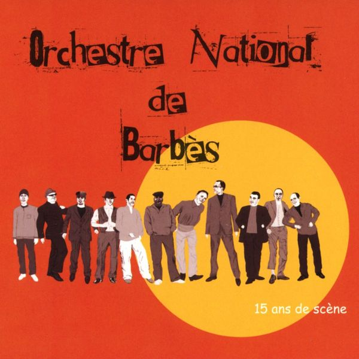
01Sympathy for the Devil
Orchestre National de Barbès – 15 ans de scène (2012)
orig. The Rolling Stones
02
Jumpin' Jack Flash
Alex Chilton – Free Again: The "1970" Sessions (2012)
orig. The Rolling Stones
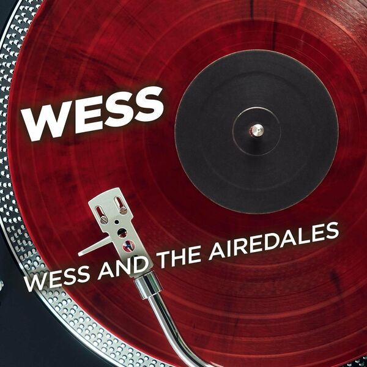
03Hey Joe
Wess & The Airedales – Wess & The Airedales (2020)
orig. Jimi Hendrix
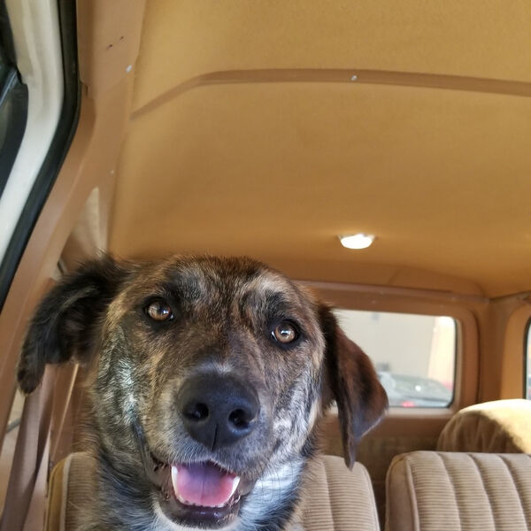
04Pocahontas
Trampled By Turtles – Sigourney Fever (2019)
orig. Neil Young
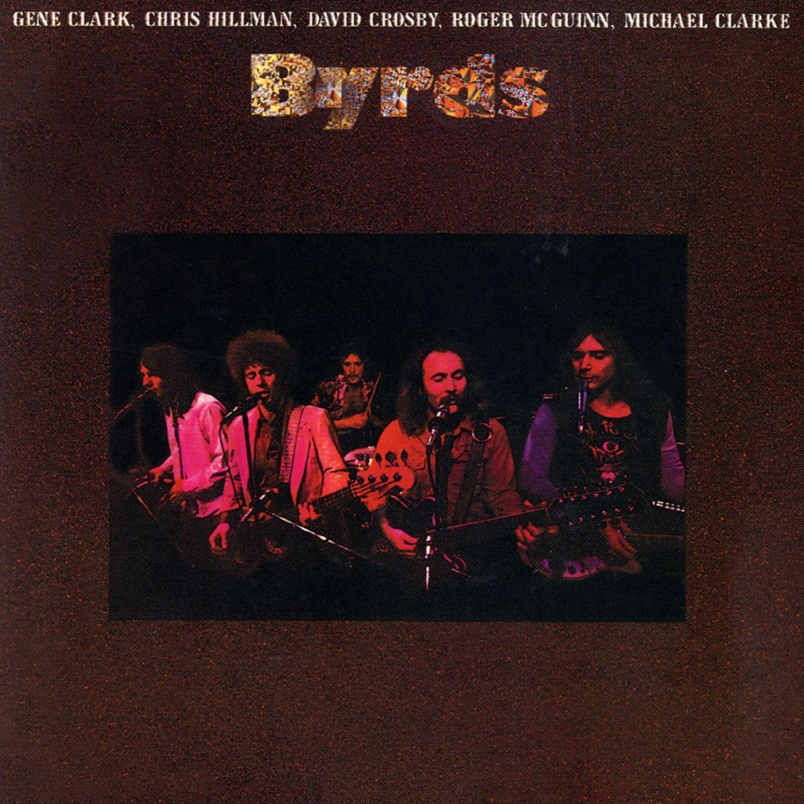
05Cowgirl In The Sand
The Byrds – The Byrds (2005)
orig. Neil Young
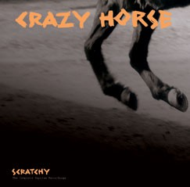
06When You Dance You Can Really Love
Crazy Horse – Scratchy: The Complete Reprise Recordings (2005)
orig. Neil Young
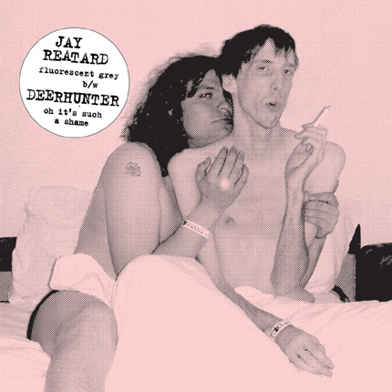
07Oh It's Such a Shame
Deerhunter – Jay Reatard/Deerhunter Split 7" (2008)
orig. Jay Reatard
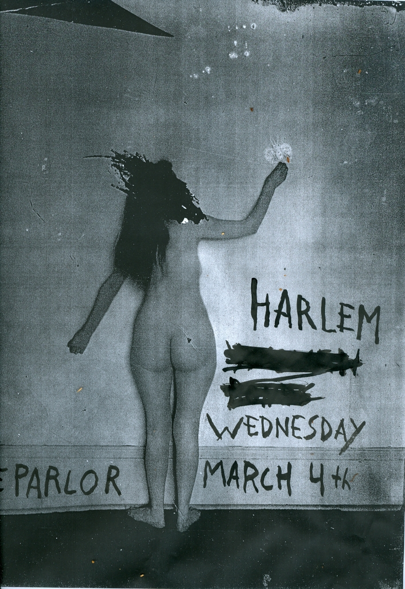
08Come Back Jonee
Harlem – Cussers (2009)
orig. Devo
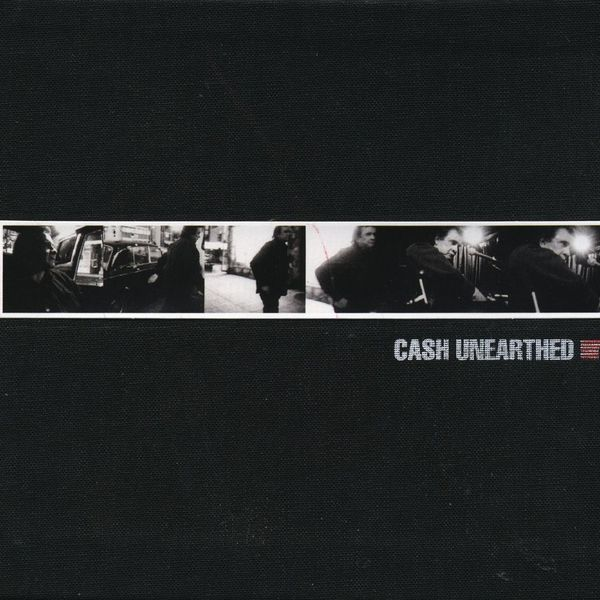
09One
Johnny Cash – Unearthed (2003)
orig. U2
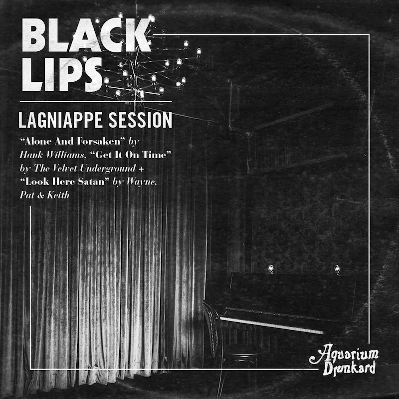
10Look Here Satan
Black Lips – Aquarium Drunkard: Lagniappe Sessions - Black Lips (2020)
orig. Wayne Pat & Keith
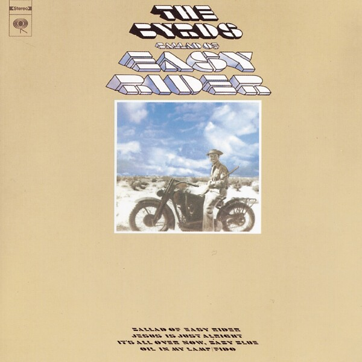
11Jesus Is Just Alright
The Byrds – Ballad Of Easy Rider (1997)
orig. Art Reynolds / The Doobie Brothers
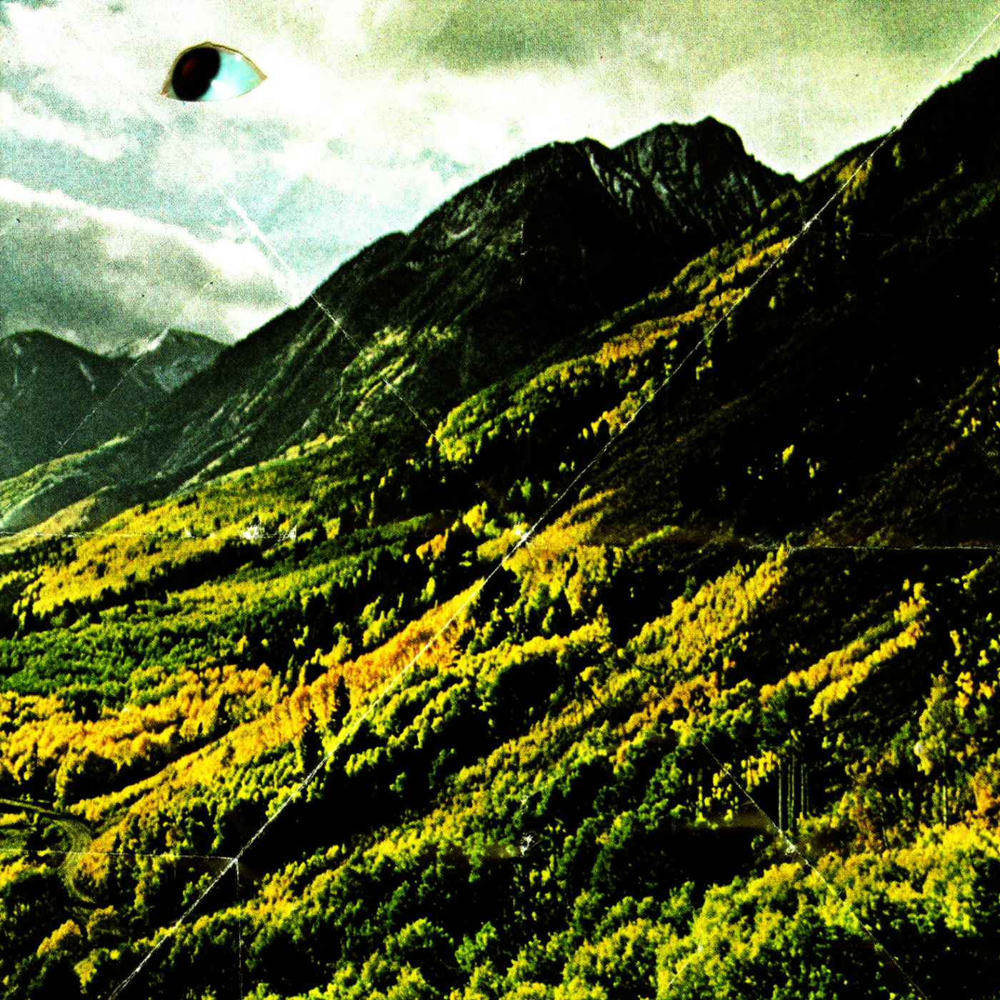
12Military Madness
Woods – Songs of Shame (2009)
orig. Graham Nash
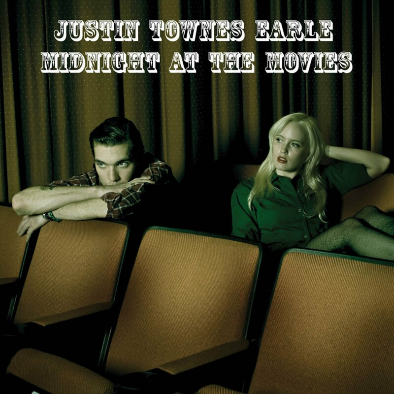
13Can't Hardly Wait
Justin Townes Earle – Midnight at the Movies (2009)
orig. The Replacements
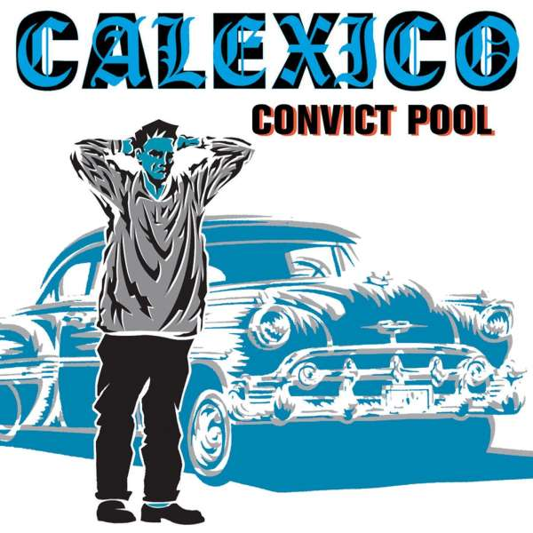
14Alone Again Or
Calexico – Convict Pool (2004)
orig. With Nicolai Dunger and His Band
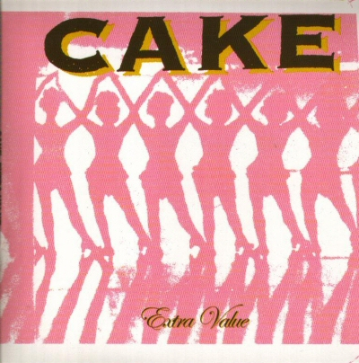
15Ruby, Don't Take Your Love To Town
Cake – 99 Best Covers Ever (IV) - The Killing Moon - Extra Value (2004)
orig. Waylon Jennings
 16
16
Stuck Inside Of Mobile With The Memphis Blues Again
Cat Power – I'm Not There (Music From The Motion Picture) (2007)
orig. Bob Dylan
 17
17
Allison Road
White Fence – Aquarium Drunkard: Lagniappe Sessions - White Fence (2012)
orig. Gin Blossoms
 18
18
I'm Waiting For The Man
Tina Harvey – 7 " Single (1976)
orig. The Velvet Underground
 19
19
Heartbeat
Black Tambourine – Black Tambourine (2009)
orig. Buddy Holly
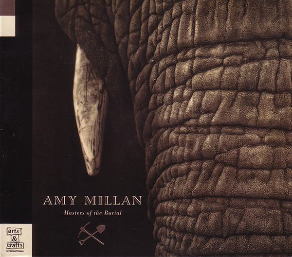
20I Will Follow You Into The Dark
Amy Millan – Masters Of The Burial (2009)
orig. Death Cab For Cutie
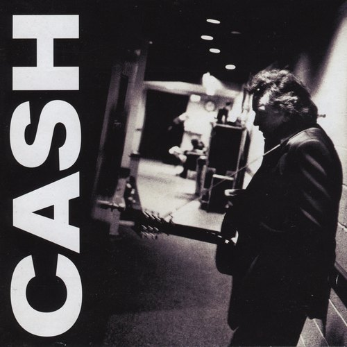
21One
Johnny Cash – American III - Solitary Man (2000)
orig. U2
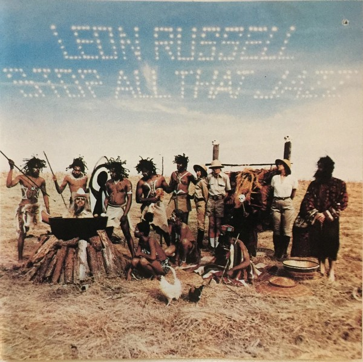
22Wild Horses
Leon Russell – Stop All That Jazz (1974)
orig. The Rolling Stones
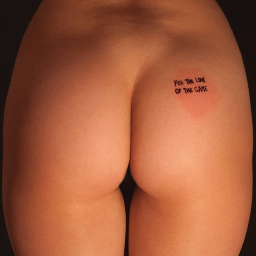
23That's How I Got to Memphis
Natural Child – For the Love of the Game (2012)
orig. Bobby Bare
 24
24
Baby, I'm In The Mood For You
Odetta – Sings Dylan (2008)
orig. Bob Dylan
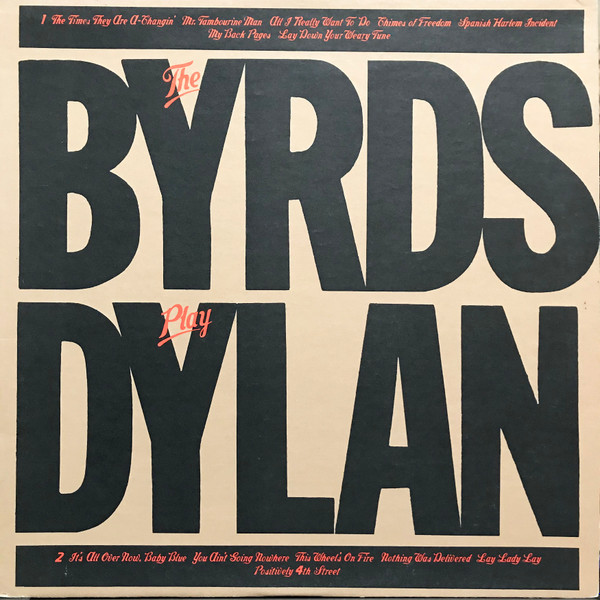
25You Ain't Going Nowhere
The Byrds – The Byrds Play Dylan (2008)
orig. Bob Dylan
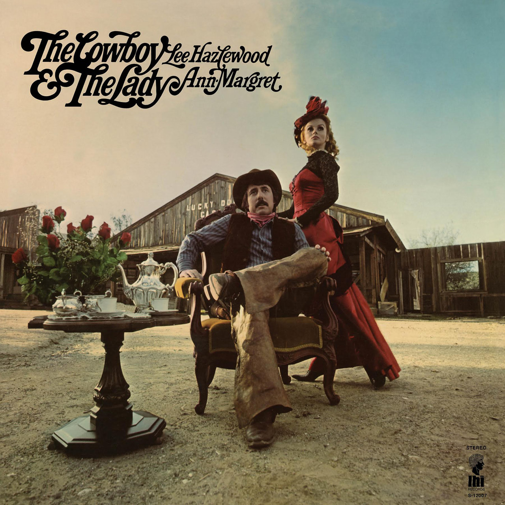
26Dark End Of The Street
Lee Hazlewood & Ann-Margret – The Cowboy & The Lady (2017)
orig. James Carr
 27
27
Some Candy Talking
Richard Hawley – Hotel Room 45 (2006)
orig. Jesus And Mary Chain
 28
28
People Are Strange
Camera – A Psych Tribute to the Doors (2014)
orig. The Doors
 29
29
Just Like Heaven
Joy Zipper – Just Like Heaven: a tribute to The Cure (2009)
orig. The Cure
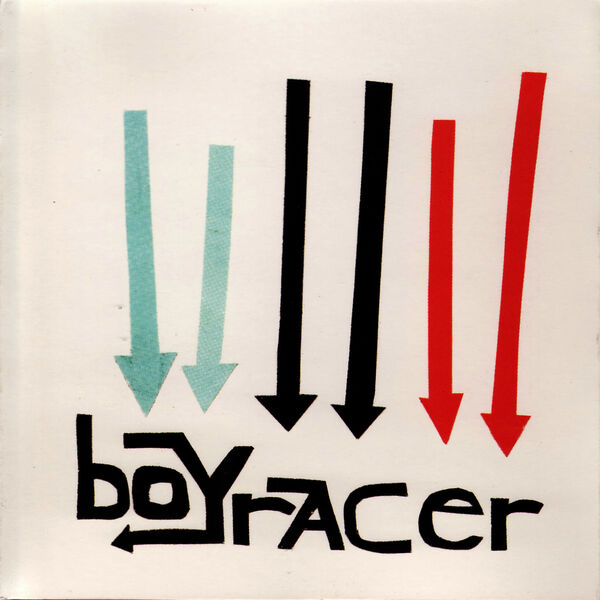
30Nothing Left
Boyracer – To Get a Better Hold You've Got To Loosen Yr Grip (2002)
orig. The Primatives
 31
31
Lee Remick
So Cow – The Go-Betweens cover (2009)
orig. The Go-Betweens
 32
32
To Love Somebody
Sea Lions – All Right EP (2011)
orig. Bee Gees
 33
33
Teardrops
The xx – Internet Single (2008)
orig. Womack and Womack
 34
34
Animal Tracks
Alex Bleeker and The Freaks – Alex Bleeker and The Freaks (2009)
orig. Mountain Man
 35
35
John, I'm Only Dancing
Vivian Girls – John, I'm Only Dancing - Single (2010)
orig. David Bowie
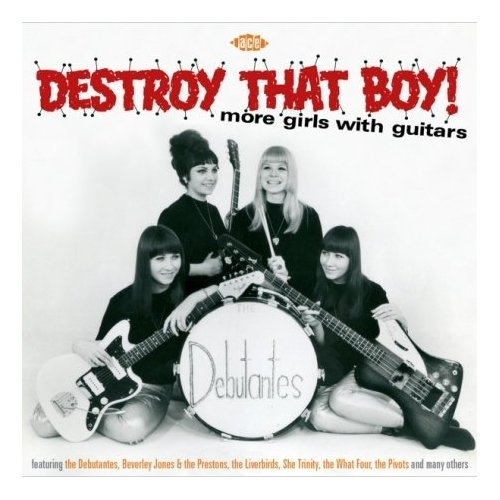
36He Fought The Law
She Trinity – Destroy That Boy! More Girls With Guitars (Ace) (2009)
orig. The Bobby Fuller Four
 37
37
My Fair Baby's Coming For Me
TV Torso – Internet Single (2011)
orig. Joe Meek/Paul Kane
 38
38
The KKK Took My Baby Away
Shonen Knife – Osaka Ramones (Tribute To The Ramones) (2011)
orig. The Ramones
 39
39
White Line Fever
The Flying Burrito Brothers – The Flying Burrito Brothers (2017)
orig. Merle Haggard
 40
40
CI (Devil Town)
Los Punsetes – Coloreando A Daniel Johnston (2012)
orig. Daniel Johnston
 41
41
I'm Going Down
Coltrane Motion – Bruce (2009)
orig. Bruce Springsteen
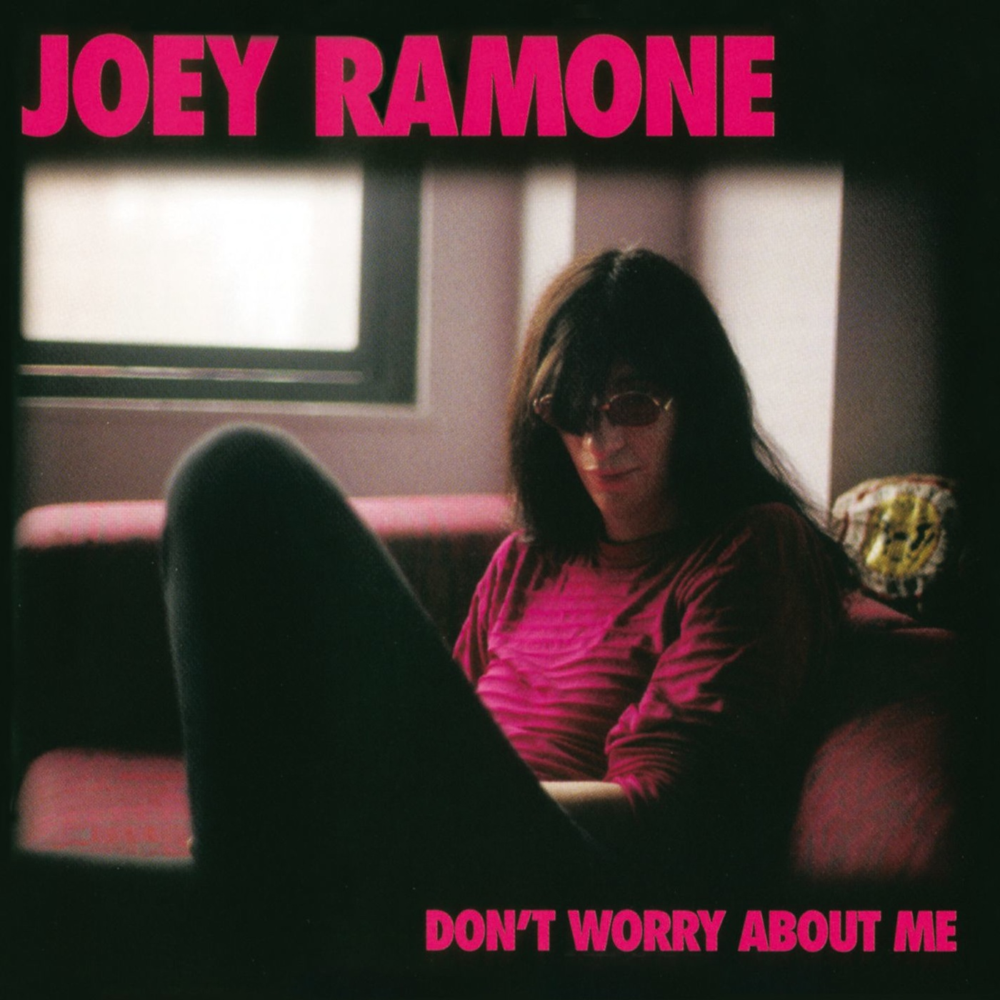
42What a Wonderful World
Joey Ramone – Don't Worry About Me (2002)
orig. Louis Armstrong
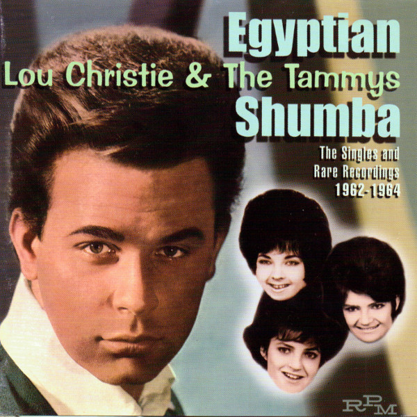
43Egyptian Shumba
The Tammys – Egyptian Shumba - The Singles And Rare Recordings 1962-1964 (2001)